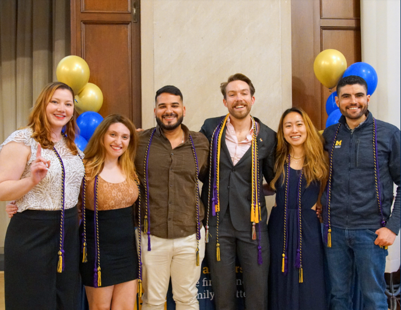

At the University of Michigan, there are approximately 4,000 students who are in the first generation of their family to attend college. Going off to college as ones of the firsts can be a bit challenging. The mission of First Generation is to help First Gen students connect and thrive on campus through various networks and programs. It can also be a good community for many to be a part of.
Who is "First-Generation?"
At the University of Michigan, the term "first-generation college student" refers to individuals whose parents or guardians have not completed a four-year college degree. This broad definition applies to both undergraduate and graduate students. However, all events hosted by the University of Michigan’s First-Generation Student Gateway are open to any student who feels these resources may be valuable, regardless of their background.
The concept of “first-generation” was introduced through TRIO Support Services to emphasize the distinct challenges faced by students with diverse and intersecting identities as they pursue higher education (Jehangir & Romasanta, 2021). This term acknowledges that the traditional structures of higher education were not originally designed to accommodate the unique needs of first-generation students. Programs and initiatives stemming from this recognition are dedicated to supporting students in a holistic manner, with the ultimate goal of breaking down barriers and promoting equitable access to higher education for all.
First Gen Gateway
The First Gen Gateway is a great place to start for first generation students. The First Gen Gateway is a one-stop shop for first-generation college students at the University of Michigan, open 8AM-5PM. The Gateway provides a variety of resources and services to help first-generation students succeed, including:
- Finding resources for first-generation students
- Connecting to partner offices that support first-generation students
- Meet with First Generation Project Manager Terra Molengraff
- Study Space
- Meeting Space
Events
The First Generation Organization also hosts various events. All undergraduate, graduate, and doctoral students who are graduating in Fall 2024, Winter 2025, Spring/Summer 2025, or Fall 2025 can find more information through the Graduation page.
Contact
E-Mail:
firstgeninfo@umich.edu
Address:
3009 Student Activities Building
515 E. Jefferson
Ann Arbor, MI 48109
Phone:
(734) 936-1055
Website:
First Gen